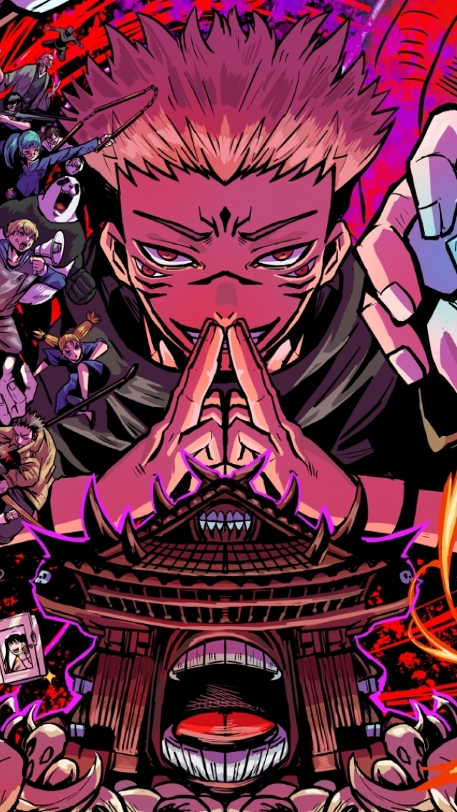

What is Jujutsu Kaisen?
Updated on May 23, 2024, by Ajay Aravind: Jujutsu Kaisen is one of the most exciting anime series of recent years, quickly rising to the top ranks of Shonen anime.
The English translation for "Jujutsu Kaisen" is "Sorcery Fight," but there's a deeper meaning beneath the surface. In Japanese, "Jujutsu" refers to cursed techniques, or "Jujutsushiki," which are the unique battle skills used by Jujutsu Sorcerers to combat curses and dark forces.
The word "Kaisen" was coined by the creator, combining the Kanji for "rotation" and "battle," signifying an endless cycle of struggles and battles against curses.
This dark and intense story is about more than just sorcery—it's about survival, sacrifice, and a battle against overwhelming dark forces. A prequel series titled Jujutsu Kaisen 0: Jujutsu High started on April 28th, 2017, in the Jump GIGA 2017 vol.1 issue. The series was meant to be a short series and continued for four chapters and concluded in the 2017 vol.4 issue. On March 5th, 2018, in the 2018-14 issue of Weekly Shonen Jump, the serialization of Jujutsu Kaisen started, acting as an sequel to the previous short series, featuring new main characters. In December 2018, along with the release of the series 3rd volume, an additional volume was released labelled as 0th volume and containing the 4-chapter prequel series. On August 19, 2024, JUMP PRESS news segment revealed the series will end in 5 chapters with Chapter 271, released on September 30, 2024, in Weekly Shonen Jump Issue 2024-44.
